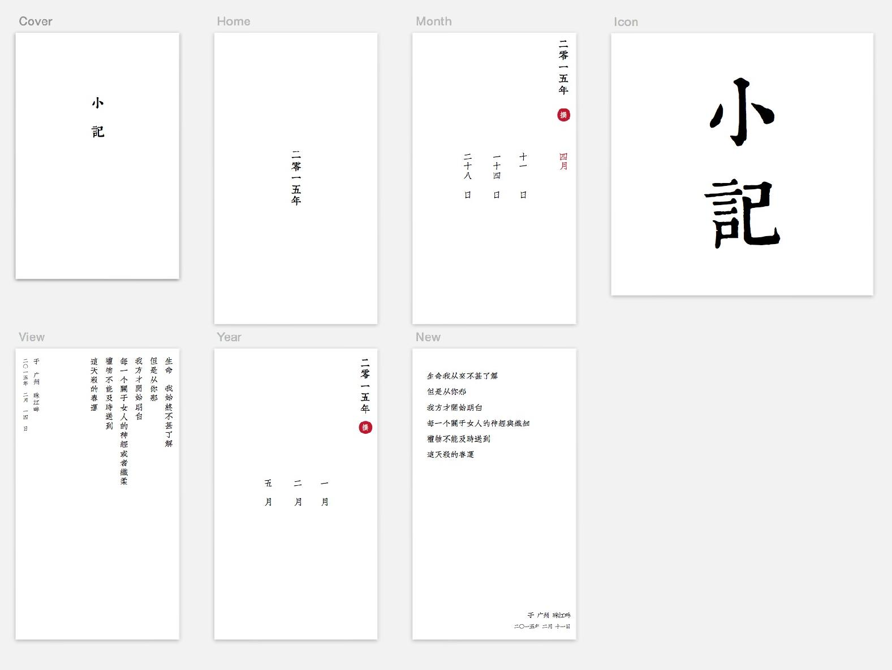

小记 我最早的构思是想像 iOS 7 之后的日历一样，以时间为线索，通过纵深层次转换来表现时间的变化，以呈现不同级别的内容。
但是当我开始设计的时候，我突然想为什么要做一个没有特色的东西？为什么日记一定要为大量书写，图文混排而生？
于是在 Sketch 上经过一番尝试，最终，以时间为交互线索，纵书为展现格式的设计诞生了。
为了尽可能实现原汁原味的效果，我做了大量的日本直书设计研究，其中最有价值的是 W3C 关于纵书的规范。
在这之后，首先我设计了主界面—— 年
宋体似乎是每个互联网圈的设计师都极力避免的，但是在这个 App 里，宋体以其严谨，稳重，恰好适用。在界面的设计中，字体的选择起到了决定性的作用，完全可以左右设计的气质和特点。
尝试多种字体的效果，选择最贴切的版本，是让产品找到自己灵魂最简单的方法。
对齐，设计里非常关键的要素，我刚开始做设计的时候特别喜欢为了追求不同，而把标题摆在角落里。这样设计虽然看起来够反叛，但是往往是讲不通的，为什么放在右下角，边距是多少，为什么设置这些边距。但是凡事无绝对，在特殊的场合你也可以利用这种无规则来表达一种情绪。
居中是一个很好用的方法，特别是在 小记 的设计里，在打开这个 App 的时候，用户眼睛的视线会自然聚焦到年份这里，足够庄重，足够有仪式感。
接下来月的设计就有了更多的考虑
在前些日子看 The Architecture Academy 的时候，有一个让我印象深刻的一点——在室内设计中，尤其是极简主义，往往会在场景中布置一个物体来吸引观察者的眼球，以发生联想。
在年的下面，我放了一个红底的“撰”，我想每个用户看到这个“撰”的时候，都会想去点击这里，并且让平稳的平面产生了活力。撰的位置在年视图和月份的视图里都是固定的，随着用户的使用，按钮的位置会成为一种肌肉记忆，从而避免了视觉搜索，凭感觉就可以选中。
在红色的选择上是很谨慎的，这个红色特别从 Photoshop 的 CMYK 色表选择出来，随便在色盘上拽一个颜色是很不负责的，RGB 虽然可以组成你看到的一种颜色，但是会出现这种 RGB (1, 150, 120) 这种情况，事实上并不需要那一点 Red，但是确实加入了这一点 Red，这会导致在诸多情况，特别是印刷的时候的杂色问题。
“二零一五年”的字体大小是 36，距离顶部和右边边缘的距离都是 36，“撰”的圆形顶部距离“年”也是 36，并与“年”的中心对齐。这种数字上的精确是美感逻辑上的保证，虽然可能 36 和 35 差不多，但是从不同的人眼里，这个差距会无限放大，特别是从你自己的心里。
月份之间留出了大概一个拇指的宽度，方便交互。月份设置在屏幕的中间，并且只显示三个，多余的通过向右滑动来查看。选择三也是因为它是中国文化里很有禅意的一个数字，放在这里正好能贴合设计上的美感。
在月份里面，这种逻辑被继续贯彻
增加了一个红色的月份，放在右边，与月份顶端对齐，与年中心对齐——这样月就像这两个区域的中枢，一种元素之间的和谐。
那么接下来，这就是正文的设计
参考 W3C 关于纵书的规范，每列之间的距离大概是字体的大小。字体的间距设置为 3 点，在最终的位置和时间上做了字体的缩小以减少视觉上的吸引。
到此设计就基本完稿，然而在过年的时候，我去了一位从事建筑设计叔叔家住了几天。在我和他聊这个设计的时候，他又一次给了我很重要的建议：如果你要做这种设计，就把这个味道做足。
于是最终，我使用康熙字典体和文悦古仿宋把这款 App 带入了另一个境界。

这让我回忆起多年前，我刚开始做设计的时候，他告诉了我设计中一个极为重要的要领，就是设计并不是把多个灿烂夺目的东西拼凑到一起，或许一个就足够了。
你可以在这里获得完整的 Sketch 文件，以及在文悦子型得到字体。